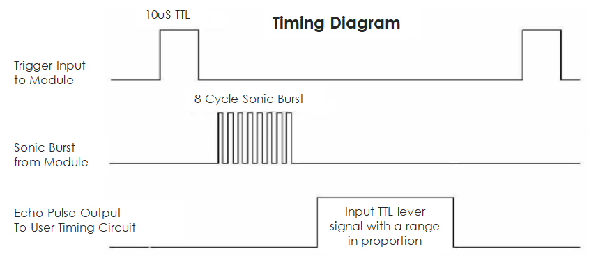

注釈
こんにちは、SunFounderのRaspberry Pi & Arduino & ESP32愛好家コミュニティへようこそ！Facebook上でRaspberry Pi、Arduino、ESP32についてもっと深く掘り下げ、他の愛好家と交流しましょう。
参加する理由は？
エキスパートサポート：コミュニティやチームの助けを借りて、販売後の問題や技術的な課題を解決します。
学び＆共有：ヒントやチュートリアルを交換してスキルを向上させましょう。
独占的なプレビュー：新製品の発表や先行プレビューに早期アクセスしましょう。
特別割引：最新製品の独占割引をお楽しみください。
祭りのプロモーションとギフト：ギフトや祝日のプロモーションに参加しましょう。
👉 私たちと一緒に探索し、創造する準備はできていますか？[ここ]をクリックして今すぐ参加しましょう！
超音波センサーモジュール（HC-SR04）

概要
超音波センサーモジュール（HC-SR04）は、超音波波を用いて2cmから400cmまでの距離を測定するセンサーです。ロボティクスやオートメーションプロジェクトでよく使用されます。このモジュールは、超音波送信機と受信機から構成され、超音波波を送受信します。
原理
このモジュールは、超音波送信機、受信機、制御回路を含みます。基本的な原理は以下の通りです：
IOフリップフロップを使用して、少なくとも10usの高レベル信号を処理します。
モジュールは自動的に8つの40kHzを送信し、パルス信号が戻るかどうかを検出します。
信号が戻ると、高レベルを通過し、高出力IO持続時間は超音波波の送信からその戻りまでの時間です。この場合、テスト距離 =（高時間 x 音速（340 m / s）/ 2）。
以下にタイミング図を示します。

測定を開始するには、トリガー入力に短い10usパルスを供給するだけで、その後モジュールは40kHzで8周期の超音波を送出し、そのエコーを上げます。トリガー信号の送信とエコー信号の受信の時間間隔を通じて、範囲を計算できます。
注釈
トリガー信号とエコー信号の信号衝突を防ぐために、60ms以上の測定周期を使用することが推奨されます。
- 計算式：
us / 58 = センチメートル
us / 148 = インチ
距離 = 高レベル時間 x 音速（340m/s）/ 2;
使い方
使用する電子部品
Arduino Uno R4またはR3ボード * 1
超音波センサーモジュール * 1
ジャンパーワイヤー
回路の組み立て

コード
コードの説明
ピン宣言：
まず、超音波センサー用のピンを定義します。
echoPinとtrigPinは整数として宣言され、それらの値はArduinoボード上の物理的な接続に合わせて設定されます。const int echoPin = 3; const int trigPin = 4;
setup()関数：setup()関数は、シリアル通信を初期化し、ピンモードを設定し、超音波センサーが使用可能であることを示すメッセージを出力します。void setup() { Serial.begin(9600); pinMode(echoPin, INPUT); pinMode(trigPin, OUTPUT); Serial.println("超音波センサー："); }
loop()関数：loop()関数は、センサーからの距離を読み取り、それをシリアルモニターに出力し、次の繰り返しの前に400ミリ秒遅延します。void loop() { float distance = readDistance(); Serial.print(distance); Serial.println(" cm"); delay(400); }
readDistance()関数：readDistance()関数は、超音波センサーをトリガーし、信号が戻るまでの時間に基づいて距離を計算します。float readDistance() { digitalWrite(trigPin, LOW); // Set trig pin to low to ensure a clean pulse delayMicroseconds(2); // Delay for 2 microseconds digitalWrite(trigPin, HIGH); // Send a 10 microsecond pulse by setting trig pin to high delayMicroseconds(10); digitalWrite(trigPin, LOW); // Set trig pin back to low float distance = pulseIn(echoPin, HIGH) / 58.00; // Formula: (340m/s * 1us) / 2 return distance; }
追加のアイデア
距離をシリアルモニターではなくLCD画面に表示する
対象物が閾値距離内にある場合にLEDを点灯する